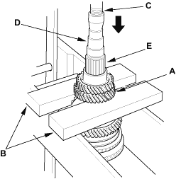
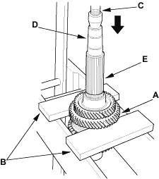
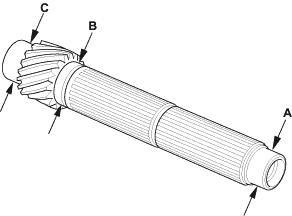
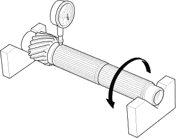

- Support 4th gear (A) on steel blocks (B), then use a press (C) and an attachment (D) to press the countershaft (E) out of the 5th gear.

- Support 2nd gear (A) on steel blocks (B), then use a press (C) and an attachment (D) to press the countershaft (E) out of the 3rd gear.


- Inspect the gear surface and bearing surface for wear and damage, then measure the countershaft at points A, B, and C. If any part of the countershaft is less than the service limit, replace it with a new one.
Standard:
A Ball bearing surface (transmission housing side):
30.020 - 30.033 mm (1.1819 - 1.1824 in.)
B Distance collar surface:
39.937 - 39.950 mm (1.5723 - 1.5728 in.)
C Needle bearing surface (clutch housing side):
40.000 - 40.015 mm (1.5748 - 1.5754 in.)
Service Limit:
A: 29.97 mm (1.180 in.)
B: 39.883 mm (1.5702 in.)
C: 39.95 mm (1.5723 in.)

- Inspect the runout by supporting both ends of the countershaft. Rotate the countershaft two complete revolutions when measuring the runout. If the runout exceeds the service limit, replace the countershaft with a new one.
Standard:
0.02 mm (0.001 in.) max.
Service Limit:
0.05 mm (0.002 in.)
